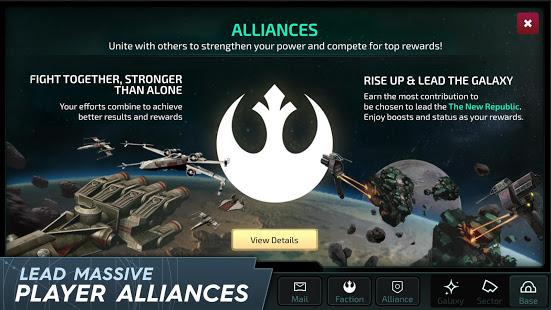
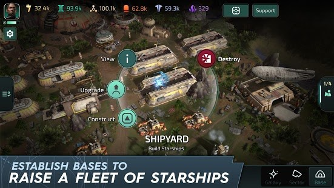
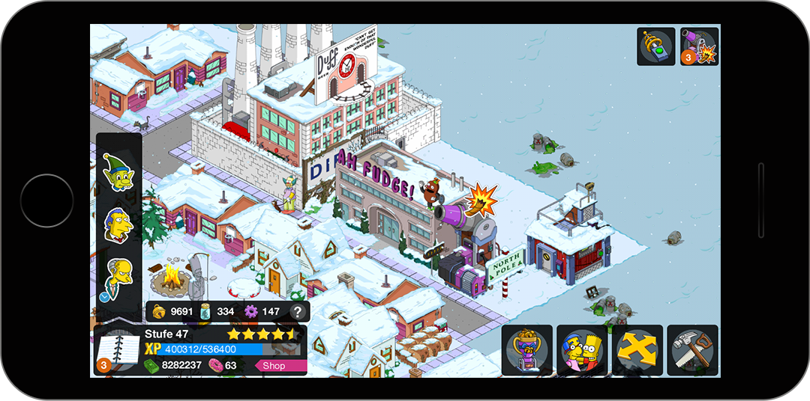
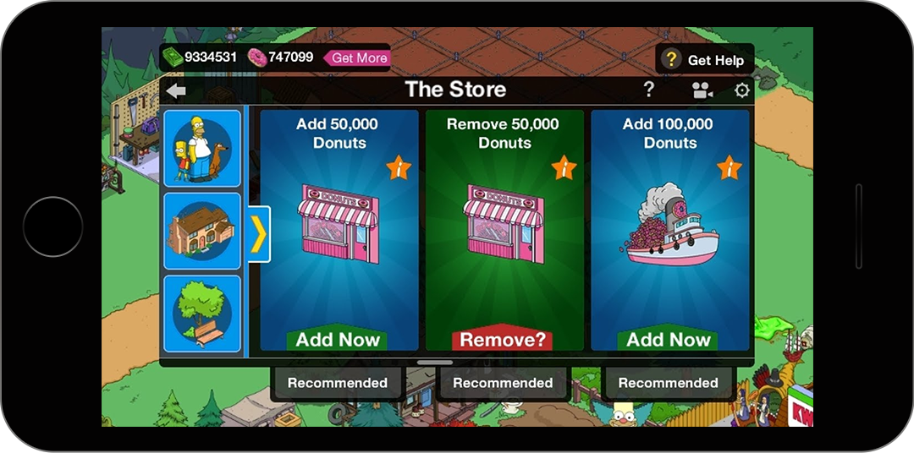
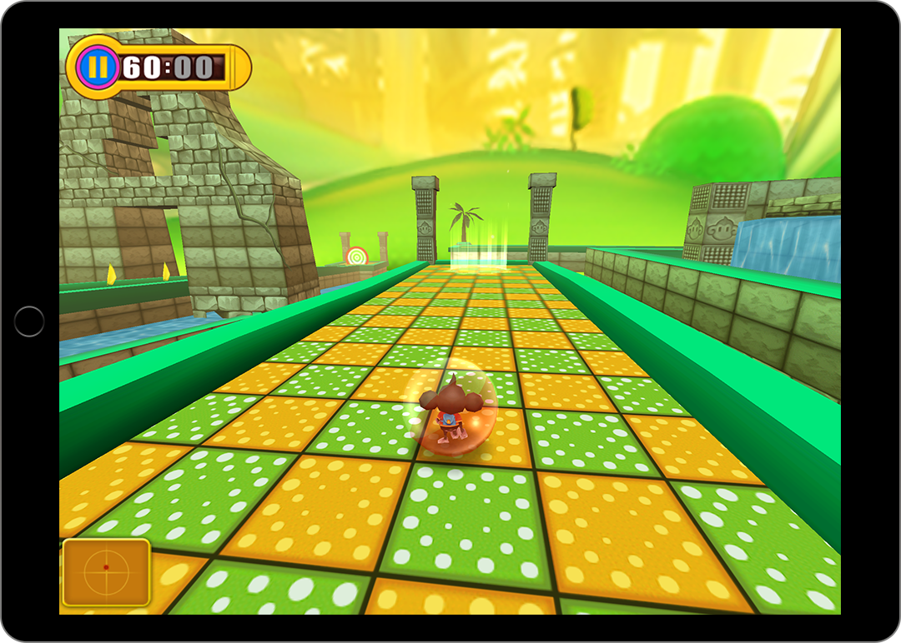
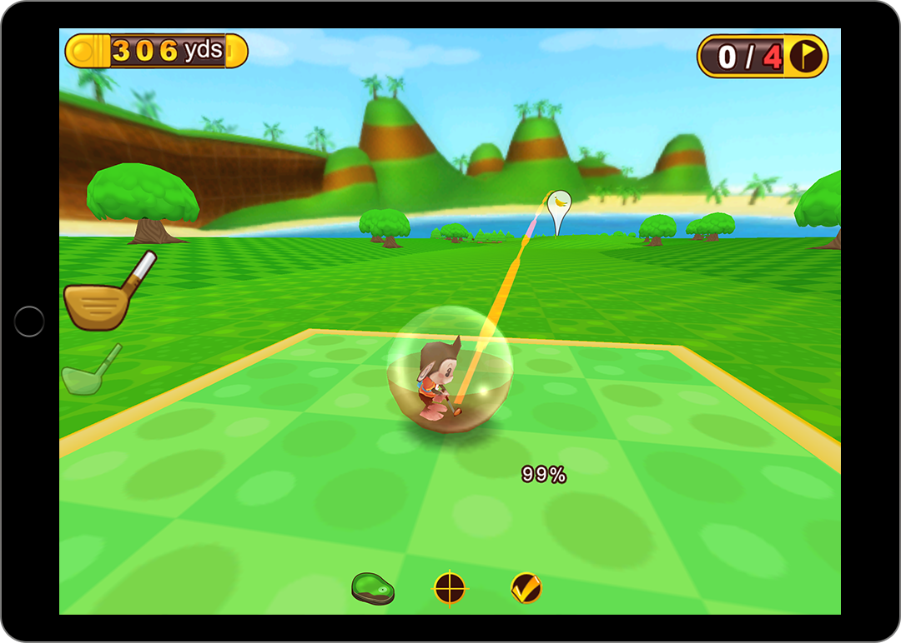

Over a decade experience bringing games to players
Jonathan Winthrop Innes has been working on and releasing games for over a decade.
- Cut his teeth of the early days of digital download on Xbox Live Arcade with Backbone Entertainment
- Part of the Other Ocean team to out of Apple HQ to bring Super Monkey Ball screen for Steve Jobs keynote revealing iPhone 3G and iPhone OS 2.0
- Learned how to make each pixel count on Nintendo DS games with Other Ocean
- Over a decade of User Interfaces from Nintendo to IOS and Android with Other Ocean, and Electronic Arts
- UI for The Simpsons Tapped Out, helping EA generate over $130 million in revenue since the game's release.
- The honor to work with great teams and great IPs, having worked on properties from Marvel, Sega, Gracie Films, and Lucas Arts.
Games with Electronic arts:
Star Wars™ Rise To Power - Closed Pre-Aplha
Early prototyping and EA Green-light gates
- Working on both the early UI and UX for the prototype that would become Rise to power.
- Worked closely with both onsite team and outsourcing, providing feedback, reviewing UI/X.
- Defined processes and workflows for creating UI in Unity.
- Worked closely with engineering to implement UI in unity, this involved heavy technical skills with a good understanding of logic and optimization.
- On-boarded new UI artist to the team, teaching the processes and workflows.
- Working closely with on and offsite UX leads to insure the best experience for our players.
- Budgeting for UI based on UX designs and breaking down all technical requirements.
- Constant iteration, communication, and review with different departments and leadership to insure timelines and expectations where meet.




The Simpsons™: Tapped Out https://play.google.com/store/apps/details?id=com.ea.game.simpsons4_na&hl=en
2013-2015- Creation and iteration of menus and iconography.
- Worked closely with engineering to implement UI in a custom system, this involved heavy technical skills understanding layouts and optimization.
- On-boarded new UI artist to the team, teaching the processes and workflows.
- Reviewed UI work to insure it meet the quality required by Film Roman/Gracie Films and our players.
- Designed and implemented UI for new Events.
- Designed and implemented UI for new Store.
- Worked with team Leads and UX lead to insure new UI designs would exceed player exceptions.
Games with Other Ocean Interactive:
During my time at Other Ocean interactive I got to work with and learn from a great team. As a general artist I had to fill a number of roles including:UI, UI Design, Modeling, Texturing, Rigging, Painting, and Leading a team of artist for projects.
While there I got to work on:
- South Park Tenorman's Revenge XBLA
- X-Men Destiny DS
- Washer Toss IOS
- My Amusement Park DS
- Super Monkey Ball 2 Sakura Edition
- Super Monkey Ball 2 IOS
- Puffins: Island Adventure for Nintendo DS
- Super Monkey Ball IOS
- Ultimate Mortal Kombat for Nintendo DS
- Tron and Discs of Tron for Xbox Live Arcade
- Castlevania: Symphony of the Night for Xbox Live Arcade

